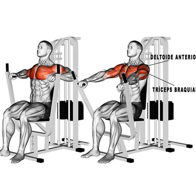

Site feito no intuito de ajudar repassando conhecimento sobre musculação, não sou nutricionista nem treinador! Tudo que você encontrar no site pode estar errado, é por sua conta em risco.
O QUE VOCE PROCURA SOBRE TREINO ESTÁ AQUI!
TREINO DE COSTAS DO CBUM
O ultimo treino de costas postado no canal do 4 vezes MrOlympia Chris Bumbstead, dia 24 de fev.
Conhecido por treinar MUITO pesado, Chris é instruido por seu treinador Hany Rambod nos treinos desde o ano de 2022, eles começam pelo Pulley com a puxada neutra.
Duas boas dicas que podem te ajudar no pulley e treino de costas no geral:
Pensar em puxar o cotovelo e não apenas o braço pra baixo!
Trazer o braço o mais proximo possivel do corpo, se quiser mais ênfase na Dorsal.
O proximo exercício do 4 vezes campeão do MrOlympia é um queridinho da maioria dos maromba, a Remada curvada! Porém, ele faz com a pegada reversa.
O terceiro exercício do treino do Cbum é uma Remada com halteres num banco inclinado em 45 graus.
Detalhe: no vídeo ele faz a remada proximo do tronco lembrando que isso é pra dar ênfase na Dorsal!
E pra finalizar o treino de costas ele faz um pulldown numa corda diferente das que normalmente tem nas academias convencionais.
Não encontramos imagens do pulldown com a corda que ele usou no vídeo.
TREINO DE PERNA DO RAMON DINO!
Ramon Dino é o Atual campeão do Arnold Classic! E também Top 2 Classic Physic do MUNDO no MrOlympia. Treinado por Fabricio Pacholok, o fenomeno do Acre esta conquistando o mundo e propagando mais ainda esse esporte no Brasil.
Treino de perna do Ramon!
Pra começar o treino de perna, um exercício que destrói o quadríceps, a cadeira extensora.
O proximo exercício é um dos queridinhos dos levantador de ego, o LegPress, progredindo carga e fazendo uma execução ótima, ramon usa muito volume pra dominar e moer as pernas no legpress.
Como terceiro exercício ele faz um agachamento na máquina, com bastante carga e com ajuda pra extrair o máximo do treino, ramon treina muito forte pernas e esse é um exercicio que ele pôe muita sobrecarga.
O quarto exercício que ele faz é um treino de posterior de coxa, numa maquina e de forma unilateral. Junto com esse ele faz tambem a cadeira flexora convencional.
E pra finalizar o seu treino, Ramon faz a tão amada elevação pélvica.
Treino de do Phil Heath!
Phil "The gifted" Heath é um dos maiores fisiculturistas da história, com 7 MrOlympia e com a genética consideradas por muitos, a mais simetrica que ja existiu. Também muito conhecido por não treinar com muito sobrepeso, a metodologia de Phil com toda certeza levou ele ao topo, então vamos conferir:
Treino de peito do Phil!
Pra começar o treino de peito, the gifted, começa fazendo um cruxifico reto com halter, com peso adequado e controlando a execução!
Partindo pro seu segundo exercício, Phil vai para um supino reto com halter, mais uma vez o foco não é o peso e sim a execução!
Lembrando, Phil tem como metodologia fazer com muito volume de treino pois ele conseguia estimular os músculos sem precisar colocar muita carga, tambem ja disse que quando tentou treinar com muito peso, se machucou.
Aqui um video do Phil em um PodCast onde ele explica sobre:
Para o próximo exercício, ele faz um supino inclinado na máquina com o banco em 75°.

No proximo exercício ele tambem faz um supino inclinado, dessa vez num banco de 45 graus.
Não achamos a imagem do exercício então fiquem com esse video, é esse exercício que ele estava fazendo.
E no seu último exercício, Phil Heath faz um crossover na polia alta, movimento focado na parte média e inferior do peitoral.
TREINO DE COSTAS DO RONNIE COLEMAN!
Ronnie Coleman, considerados por muitos o maior fisiculturista de todos os tempos, dono de uma das geneticas mais privilegiadas da historia, ficou famoso por treinar muito pesado. seus videos fazendo supino com halteres super pesados e levantando 1000kg no LegPress viralizaram e ajudaram a espalhar a cultura do esporte, por mais que fossem assustadores!
Treino de costas do Ronnie!
Pra começar o treino de perna, um exercício que deixou Ronnie muito famoso o Deadlift, levantamento terra para nós brasileiros. Ronnie trabalha muito bem a progressão de carga fazendo, além de muito pesado, tambem com um ótimo volume.
Depois disso the GOAT partiu pro seu ultimo exercicio (sim, ultimo) que era um ótimo para socar peso a remada cavalinha. Veja como ronnie, também, trabalhava muito a progressão de carga nesse exercício.
Vale lembrar que o Ronnie Coleman tinha treinador e todo treino era periodizado, no video só tem dois exercicios porém devemos nos atentar ao volume e a carga que ele usa.
Tambem, assim como os outros atletas isso é só uma passagem de informação sobre o treino deles, eles são atletas que usam hormônios, devemos ter cuidado ao fazer o treino que fazem e entender os limites do nosso corpo.